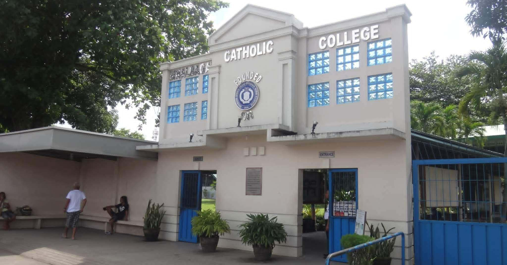

About BCC
Welcome to BCC. We are committed to providing quality education and developing students into competent, responsible, and globally competitive individuals. Our institution promotes academic excellence, leadership, and character formation.
At BCC, we believe that education is the foundation of success. Our programs are designed to equip students with practical skills, strong values, and real-world experience.
Our Mission
To provide a holistic Catholic education that forms individuals into witnesses of Gospel values, academically excellent professionals, and socially responsible citizens dedicated to the service of God and country.
Our Vision
Binalbagan Catholic College envisions itself as a premier Catholic educational institution in the region, known for its commitment to faith-formation, academic distinction, and community transformation.